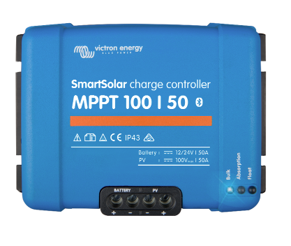

Victron SmartSolar Charge Controller
This Victron SmartSolar Charge Controller gathers energy from solar panels while storing that energy in batteries.
This unit uses the latest and fastest technology. It maximises the harvest of energy, which results in achieving a full charge in the shortest time possible.
The Victron SmartSolar uses a special technique which keeps the battery healthy, extending its lifespan.
It is also capable of recharging a near dead battery. It can even operate with a battery voltage as low as 0 Volts, however this only works if the used cells are not damaged.
For more information click here

© copyright
Victron Smart Inverter
The Phoenix Smart Inverter is efficient and reliable. It’s field tested and comes with a new design. This time around The Phoenix Smart Inverter is slimmer and has a full metal casing. Several models are available in 1600VA, 2000VA and 3000VA for 12, 24 and 48V systems.
This unit is really powerful, powerful enough to supply most common plugs in your home, car, caravan or boat. The use of a toroidal transformer provides a high capacity of power, stable storage, frequency and a sine-wave of high quality.
For more information click here
 © copyright
© copyright
Victron AGM Super Cycle Battery
The Victron AGM Super Cycle battery is particularly suitable for high current discharge applications for things like inverters, winches and thrusters because it has very low internal resistance.
The GEL model range has an overall longer life and offers the best deep cycle durability.
The use of lead calcium grids and high purity materials ensure that for both GEL and AGM products feature low self-discharge so during long periods of time without charge they will not go flat.
For more information click here
 © copyright
© copyright